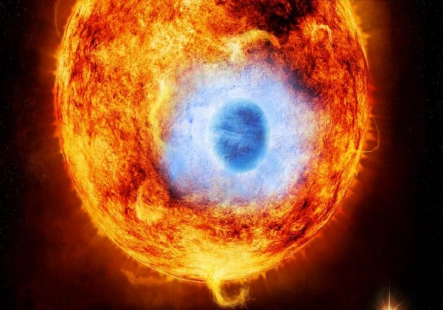

Exoplanets

Exoplanet HD 189733b
An illustration shows this intriguing exoplanet in front of it's parent star. According to Nasa
this was the first exoplanet caught passing in front of it's parent star using x-rays. This exoplanet
is 30 times closer to it's parent star than Earth is to our parent star, the sun. In the bottom right corner
of this illustration you can see part of a companion star that orbits the parent star once every
3200 years. This exoplanet gets it's beautiful blue color because it has billions and billions of
silicon particulates in it's atmosphere and in the air all around it. As it is so close to it's
parent star temperatures there are believed to be in excess of 1700 degress Fahrenheit. Since it
is so hot this exoplanet is referred to as a "hot jupiter" because it's a gas giant just like
our planet in our solarsystem Jupiter. Also on this exoplanet windspeeds can be in excess of
4,000 MPH. Due to it's extreme heat, extreme winds, and the silicone particulates this exoplanet
possibly has storms where it rains glass sideways. What an extreme place that no one should ever visit!
How do we find exoplanets?
To this date according to Nasa we have found over 2,000 Earth sized exoplanets. Those are just the ones
that has been discovered using Kepler. Kepler is a large telescope that Nasa uses to search for Earth like
exoplanets. Nasa points Kepler towards a location in the sky and by monitoring a variety of sources of
light including galaxies, star clusters, planetary systems, and brown dwarfs they can figure out if
an exoplanet is there and if it's Earth like enough to support life or not by judging how close or far it
is from it's host or parent star. A planet must be in a sweet spot or zone from it's star. This is referred
to as the "Goldilocks" zone.
How many Earth like planets?
According to Nasa out of the over 2,000 Earth sized planets they have located only 30 are in the so called
Goldilocks Zone. While this may seem disheartening we haven't even come close to discovering all the planets
in the universe. This number could be infinite just like the number of stars spoken of in our other page.
Nasa has no plans of ending the search for life on other planets and we have no intentions of ever giving
up on the belief of life elsewhere. With so many planets there must be life out there some where!
Goldilocks Zone
The "Goldilocks Zone" or as Nasa calls it the Habitable Zone is the sweet spot or perfect location from a
parent star for a planet to be able to habor life. The reason this zone is so important is because planets
must be a certain distance near and away from their star in order to have liquid water on them. Without
liquid water there is no life as we know it. In our solar system we Earth obviously is in the Goldilocks
Zone with Mars just on the far side of it and Venus just to the inside of it. Both Mars and Venus are very
close to being within the zone but barely don't make the cut. Venus and Earth are very similar in size and
it is possible that in ancient history it may have very well had life on the surface. It is also possible
that Mars also harbored life in the past.